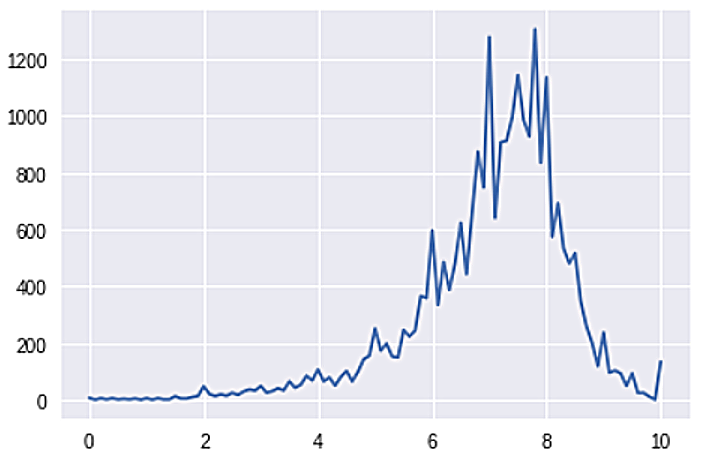
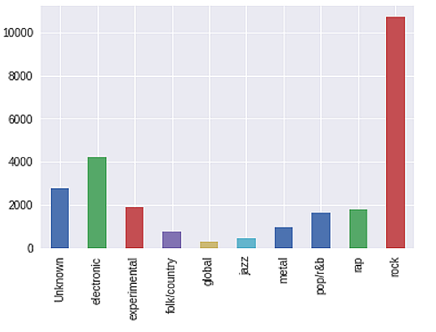
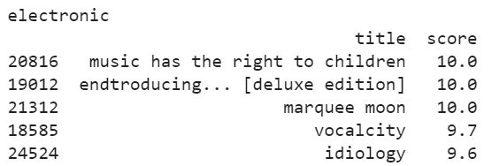

We first collect all the data required to answer the research question. Then, we check the data for null values. We found that there are several missing values in the year, label, author type and year. So we replaced these null values with the “unknown” value thus cleaning our collected data.
We then checked the distribution of scores and found out that there is an average score of 7.03 scores.

Figure 1. Distribution of Scores
Then we checked the distribution of genres and found out that the majority of the albums that was rated is of the rock genre. There might be a slight indication of a bias here.

Figure 2. Distribution of Genres
Afterwards, we checked to see what was the highest rated albums across each of the genres. The results shown below are displayed based on the 5 highest albums rated for its genre.

Figure 3. Highest Rated Albums in the Electronic Genre
Figure 4. Highest Rated Albums in the Metal Genre
Figure 5. Highest Rated Albums in the Rock Genre
Figure 6. Highest Rated Albums in the Unknown Genre
Figure 7. Highest Rated Albums in the Rap Genre
Figure 8. Highest Rated Albums in the Experimental Genre
Figure 9. Highest Rated Albums in the Pop/R&B Genre
Figure 10. Highest Rated Albums in the Folk/Country Genre
Figure 11. Highest Rated Albums in the Jazz Genre
Figure 12. Highest Rated Albums in the Global Genre
As we can see, the among the genres, all of the them have record labels with the highest score of 10 with the exception of metal and global. Also, since we know that rock is the highest rated genre, we can see that its top 5 albums are rated at 10. However, this does not immediately entail that rock based albums automatically get the highest ratings. In order for us to prove that we'll determine the correlation between factors in album rating.
After determining the highest rated albums in each genre, as well as the highest rated genre according to the number of records. We then proceeded to check the correlation between the record labels and the performance of its album.
0.0045189742218452855
As we can see, the result suggests no correlation at all between the two factors.
To further emphasize on its correlation, we tried to separate the correlation according to genre to see if only certain genres apply to having little to no correlation.
Figure 13. Values of Correlation According to Genre
Looking at the values, we can compare it and tell that all genres have no correlation as the values reach at least neither .1 nor -.1 with the lowest being rock at -.005 and the highest being global at 0.095. Even the rock genre, despite it being the highest rated genre by number of records, it still has no correlation between the album label and rating whatsoever.
Overall, we've determined that album labels regardless of which genre do not affect its overall ratings.